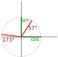

{{ title }}
Harley transform is a related transform to the more well known Fourier transform, and their goal is practically the same: to extract the amplitudes of the sinusoidal components of our signal. This article aims to introduce discrete Hartley transforms with as little focus on the continous case as possible, in a similar way as DFT was introduced in my earlier article.
Generalized angle Hartley transform
During the DFT article we made two quite important remarks that helped us to formulate the final transform from a randomly put-together system of linear equatations. These were:
- Due the the aliasing of the sines and cosines (and in line with the Nyquist-Shannon theorem) we could only measure a frequency range of 0.5, assuming the sampling frequency was 1. Of course this could mean quite a few ranges (for example from 1.5 to 2 or from 11 to 11.5), but for practical reasons we went with the simplest: from 0 to 0.5.
- In order to measure phase as well, we had to transform each phased cosine into a pair of sine and cosine thus actually linearizing our system. {{ formula("harmonic_abc.tex") }}
In the case of DFT we utilized these two findings in a somewhat strange way: we crammed the cosine-sine pair into a single complex variable and used a full 0-1 range for transformation. It did work in the end, but raises the question: can we do or express this transform differently?
Upon closer inspection we can see that the second statement was about expressing a phased function in a basis: a basis of sine and cosine. As you can see below, you can pick any other basis you want, for example a shifted cosine with the angle of 57 and 173 degrees as long as these vectors are not parallel to each other.
What do we gain by this? Picking two random phases will only complicate our calculations and when the angle between them is small, the numerical instability will rise up so there is no reaon why sould we ever use a random normalized basis instead of our comfortable orthonormal basis of sine and cosine. The main takeaway here that we need two non-parallel vectors to express the transform into frequency space.
The first statement defines a half range, but it may be interesting to see what happens outside of this range. This was already discussed in the DFT article, so the quick conclusion is that everything beyond one repeats with periods of one and between 0.5 and 1 the repetitions are symmetric to the half point, such as:
{{ formula("alias_cossin.tex") }}For example cos(2π*0.1) = cos(2π*0.9) and sin(2π*0.1) = -sin(2π*0.9). As you can see the yellow and the green parts cover the same frequencies actually, but with a twist: among complex numbers, this operation is referred to as conjugation, and for vectors this is a reflection over the x axis. All in all, if we increase the range of covered frequencies from half to one, we might inadvertently spawn a second vector, which might form a basis now. How convinient!
... or not always. With α=kπ or α=kπ/2 the conjugate vectors will either be the same or the opposite as our original vectors, and they won't be able to form a basis. These cases correspond to the Discrete cosine transform and the Discrete sine transform which are pretty important concepts on their own, but they require more work to set it up. In the other cases though we can define a generalized transform, where we can specify the angle (alpha). With an analysis matrix M this is how it looks like in practice:
{{ code("generalized_transform.py", "python") }}